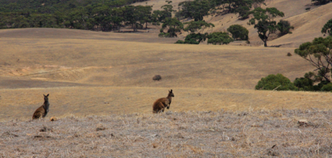
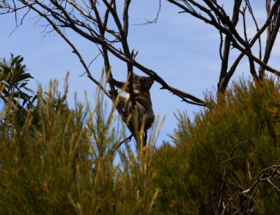
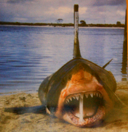

Kangaroo island - dag 2

Safari på Australsk
tirsdag den 18. december 2007


Alle nationalparker med undtagelse af en enkel, er stadig lukkede, så vi tager op til Lathami National Park - den eneste åbne, efter at have spist picnic i selskab med en masse fluer ved vandet. I parken er alt knastørt, og det kan ikke undre at lynene let har kunne antændt områderne, især fordi de her på øen har tordenvejr uden regn...
Vi leder efter den sjældne Cockatoe fugl, der kun findes her på øen. Meeen det er ikke så let at være på fugletur med to små børn, der skal være stille og liste afsted. Vi ser rumpen af to fugle, og Viola er heldig at finde en farverig fjer fra en hunfugl.
Efter den varme gåtur, tager vi endnu en dukkert og drager hjem mod hotellet.
Det er meget ærgerligt at alt er lukket, og vi kan mærke at det ikke er helt let for vores arrangører at finde på flere spændende ting at lave. Så vi taler om at afkorte turen med en dag.

Vi ser en del vilde Kænguruer på markerne. og Koalaer i træerne - dovne bjørne, der sover 19 timer i døgnet og spiser resten af tiden...